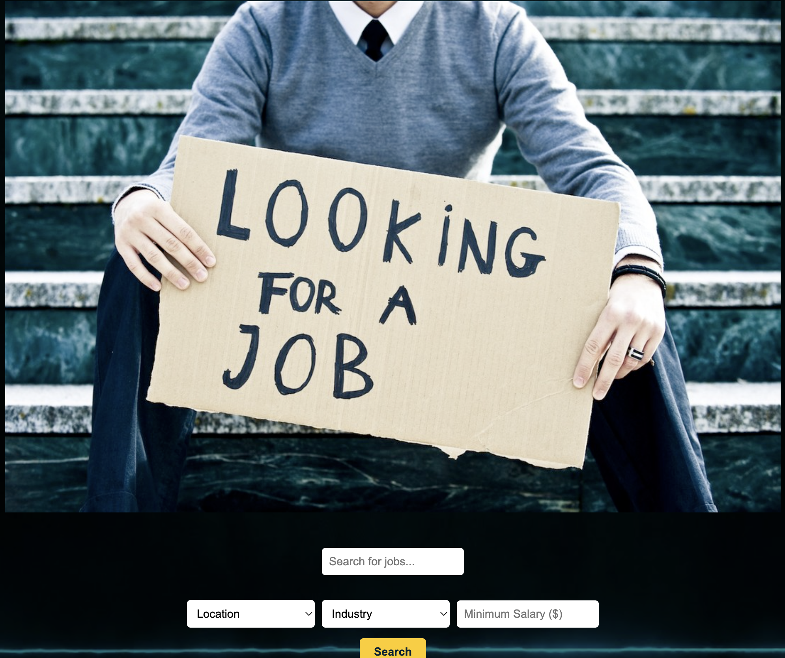

A modern job search application with real-time listings and advanced filtering.

📌 Overview
The Job Board App is a modern and dynamic web application that fetches and displays job listings using the JSearch API via RapidAPI. Users can search, filter, and save job opportunities with ease, making job hunting more efficient.
✅ Features
✔ Real-time Job Listings – Fetches jobs dynamically from the JSearch API
✔ Advanced Search & Filtering – Search by title, location, industry, experience, job type, and salary
✔ Saved Jobs Section – Users can save jobs to view later
✔ Sorting & Filtering – Sort saved jobs by title, salary, or location
✔ Mobile-Responsive – Fully functional on desktop, tablet, and mobile
✔ Modern UI & Navigation – Clean, dynamic, and user-friendly
🚀 Future Enhancements
🔹 User authentication for saving jobs across devices
🔹 Job application tracker feature
🔹 Personalized job recommendations based on user preferences
🛠️ Technologies Used
HTML | CSS | JavaScript | JSearch API | Bootstrap
🔧 Dedicated Technology Breakdown
📌 HTML5 - Structuring the job listings and UI components.
📌 CSS3 - Enhancing the styling and layout.
📌 Bootstrap - Ensuring responsiveness and modern UI.
📌 JavaScript - Handling job search functionality and user interactions.